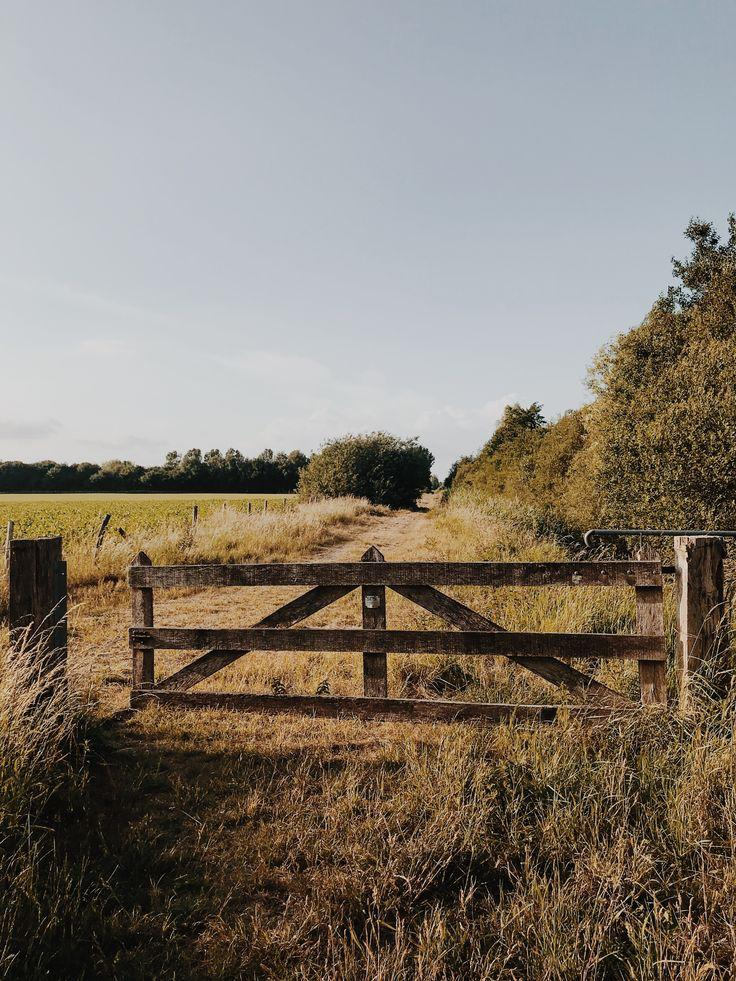

PROPIEDADES RURALES
Campos productivos
Alternativas para producción agropecuaria y desarrollo rural.
consultar disponibilidad →
GESTIÓN INMOBILIARIA RURAL
Conectamos personas, tierras y oportunidades para construir proyectos con valor.
explorar propiedadesSOBRE GRANEROS
En GRANEROS acompañamos a propietarios e inversores en la compra, venta y gestión de propiedades rurales. Trabajamos con una mirada estratégica, cercana y comprometida con cada proyecto.
Entendemos que detrás de cada campo existe una historia, una oportunidad y un futuro por desarrollar.
conocé nuestra propuesta →Una mirada profesional sobre el mundo rural.
OPORTUNIDADES RURALES
Espacios con potencial productivo y oportunidades para diferentes proyectos de inversión.
Alternativas para producción agropecuaria y desarrollo rural.
consultar disponibilidad →Evaluación de alternativas rurales según los objetivos de cada inversor.
solicitar información →Casas, lotes y emprendimientos en pozos con excelente proyección de valorización y calidad de vida.
solicitar información →Acompañamiento para analizar el potencial de cada propiedad.
conocer el servicio →Consultá por propiedades disponibles y oportunidades personalizadas. Las categorías presentadas son ilustrativas.
QUÉ HACEMOS
Acompañamiento durante el proceso de compra o venta de propiedades rurales.
Asistencia en la gestión y comercialización de propiedades.
Orientación para evaluar alternativas y oportunidades vinculadas al campo.
Análisis de opciones de inversión según las necesidades de cada cliente.
PARA PROPIETARIOS
Cada propiedad tiene un potencial único. Conversemos sobre tus objetivos y las posibilidades de comercialización de tu campo.
quiero asesoramientoHABLEMOS
Completá el formulario y contanos qué estás buscando. Nos pondremos en contacto para conocer tu proyecto.
Propiedades rurales · Gestión · Inversiones